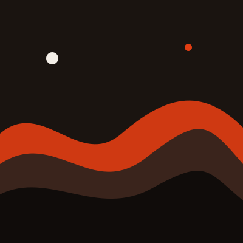
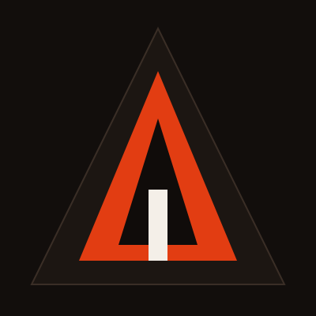
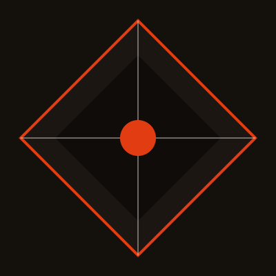
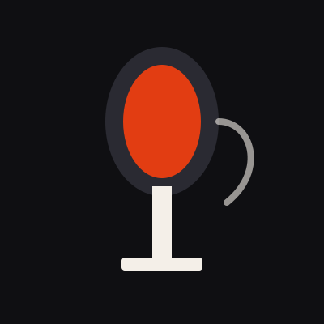

Ecos do Asfalto
Coletânea Harmonia
Guitarras secas, bateria à frente e letras que caminham pela cidade depois da meia-noite.
Abrir referênciaPortfólio de escuta
Harmonia reúne curadoria, gêneros e notas de escuta em um espaço visual seco, com preto, branco e um vermelho-laranja que marca o pulso da página.
Explorar a curadoria
Acervo
Filtre por gênero e abra um card para destacá-lo no painel de escuta.
Coletânea Harmonia
Guitarras secas, bateria à frente e letras que caminham pela cidade depois da meia-noite.
Abrir referênciaNenhum conteúdo neste gênero por enquanto.
Coletânea Harmonia
Guitarras secas, bateria à frente e letras que caminham pela cidade depois da meia-noite.

Notas de vitrine
Refrões brilhantes, produção polida e o contraste entre a pista e o fone no ônibus.

Vozes da Casa
Arranjos corais e piano que tratam a fé como espaço coletivo, sem pressa e sem excesso.

Arquivo de Flow
Versos cortados no osso, batidas secas e a cidade como cenário e personagem.

Sala de Bossa
Jazz brasileiro, violão e silêncio entre os compassos — música para ouvir perto da janela.

Estúdio Norte
Riffs pesados e dinâmica de palco: o volume sobe, o arranjo não perde o osso.

Pista Interna
Hooks curtos, baixo dançante e a repetição consciente de um refrão que cola.

Harmonia Vocal
Harmonias abertas e um pulso lento, mais perto da conversa do que do espetáculo.

Fita Cassete
Boom bap, microfone próximo e narrativas que avançam no escuro da madrugada.
Proposta
Harmonia nasceu como exercício de front-end e como caderno público de música. A página reúne gêneros que convivem no mesmo fone — rock seco, pop de vitrine, gospel coral, rap de rua e jazz brasileiro — sem pretender esgotar nenhum deles.
O interesse aqui é de curadoria: o que uma faixa faz no corpo, como um arranjo respira, e por que certos timbres voltam. Os textos são notas de escuta, não biografias.
Projeto desenvolvido por Nicolas Leal Pereira como portfólio acadêmico de HTML, CSS e JavaScript, com identidade visual própria e publicação prevista em página estática.
Fale comigo
Links públicos e um formulário visual. Nenhum dado é enviado a um servidor.